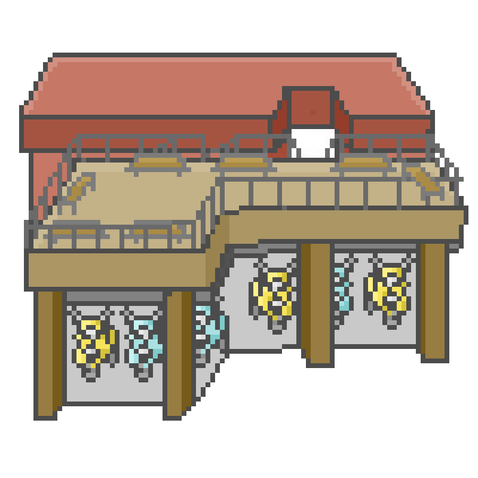
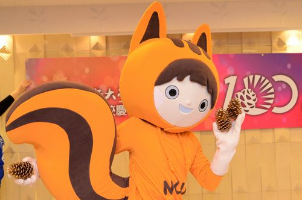

1 中大圓環(起點) |
2 大象雕塑 |
3 男九垃圾場 |
4 小木屋 |
5 中大湖(命運) |
16 觀景台 |
央央大富翁剩餘擲骰子次數：10 個人分數：100 擲骰子結果：00 |
6 壘球場 |
||
15 太極銅雕 |
7 依仁堂 |
|||
14 校史館 |
8 oloo |
|||
13 游藝館(機會) |
12 百花川 |
11 宵夜街 |
10 女生宿舍 |
9 松苑餐廳 |
主
選
單


小松鼠：歡迎你來到中央大學！你可能對這個地方還很陌生，讓我們擲出骰子，到大富翁的各地去探險吧～
這裏是起點，你會從這格開始走，讓我示範一下。
小松鼠：經過大門口代表你又完成了一圈，幫你蓋個好寶寶章加十分，記得環校路跑也要乖乖跑喔！
歡迎來到第一格:中央大學正門(答案是選項1，答對加10分，答錯扣10分)
：這個分數是什麼呢？
小松鼠：嘿嘿，這個分數代表你做出了符合「好學生」身份的行為，累積越高分，你的名字就可以出現在排行榜上，被大家看見喔！
你有十次機會可以玩這個泱泱大富翁，點擊按鈕，開始擲骰子吧
你到了一棟看起來很氣派的大樓，聽說這裡面常常會有不同的團隊進行演出，除此之外，裡面也有一間小小的咖啡廳販賣各種輕食，是文院同學常常造訪的地點。
歡迎來到第二格:黑盒子
不過，旁邊草地上的雕像到底是什麼呢？
眼前出現了一隻貓咪，跟隨他的身影，你進入了⋯垃圾場。
歡迎來到第三格:垃圾場
眼前的垃圾看起來都沒有經過分類，這時候你決定
沿著路走，你被一股甜甜的香氣吸引，停下了腳步......
歡迎來到第四格:小木屋鬆餅
你眼前一黑......
歡迎來到第四格:小木屋鬆餅
你小心翼翼地希望不要再碰到烏鴉，三個身影此時盤旋而下。
歡迎來到第四格:小木屋鬆餅
仿南京大學玄武湖而建的中大湖，景色優美，湖面碧波蕩漾，湖畔柳絮垂影，遠處的拱橋與湖心亭，宛如湖中一點墨，傍鄰的相思樹林，更添幽靜，平日可見遊人坐在碼頭上餵魚談心，野鴨與天鵝歡快嬉戲，共享一湖松風水月。
沉溺於美景的同時，一旁水面辜冬菇東冒出一堆泡泡，霎時你被濺出的水花潑了一臉。
原來是湖中女神！
那麼，你要選擇金鵝(機會)還是銀鴨(命運)呢？
這裡是中央大學的棒球場，平日假日都會有學生或棒球隊在這邊運動，有時還可以看到外籍學生集結在這個場地比賽足球呢。
中央大學遠近馳名的地面施工素質，雖然有著美觀又優秀的校園圓環馬路，但卻犧牲了其他行人權益。
不只是擁有難走又容易跌倒的人行道，更有凹凸不平的運動場地，猶如月球表面一般。
小松鼠: 這裡是中央大學的體育中心，許多體育活動與比賽都在這進行，
裡面包含籃球館、排球館、體適能健身教室、韻律教室、技擊教室，是個運動的好地方。
至於外面的公車站牌...
消息來自於XX年學長姐:
乍看之下只是設於體育館前的普通公車站牌
在陰陽眼中看到的卻是不同的世界，
在晚上回宿舍的路途中，正要經過站牌時
學長叫住了學妹
⌈等等⌋
⌈怎麼了?⌋學妹問
⌈等一下回去的路上 不要在依仁堂站牌那邊停下來⌋
⌈為什麼阿⌋
⌈沒啦 就那邊不太乾淨⌋
⌈晚上有時候看到蠻多"人"在那裡...⌋
請選擇經過時是否查看站牌:
這是中央大學校園內的交通工具之一。年滿14歲以上，下載APP註冊並綁定簽帳金融卡成為會員就可以上去騎了。
Oloo既省時又便利，可以滿足校園內短程通勤需求。最高速限是15km/h，約為步行速度的三倍。
你在學校應該會蠻常看到很多人騎著它去上下課，雖然規定是說只能一台載一個人啦，但還是有些人會雙載，
而且其實一趟計費下來也不便宜，有時候還會忘記歸還被扣費，多數人還是騎自己的腳踏車。
出門發現可能會遲到，選擇要不要騎上Oloo：
這裡就是松苑餐廳！裡面有許多店家要去哪裡看看呢？
請選擇地方：
小松鼠："哇，全家裡賣的東西玲瑯滿目耶，甚至還有校內85折！"
請選擇買什麼：
這附近接近宿舍區喔。有男3、6、7、13還有女1-4、14。通常新生會入住男9、13以及女1-4喔。去看看你的寢室吧。
走進你的宿舍，突然有一個人迎面向你跑來：
「不好意思，請問你有看到我的學生證嗎？」
這裡就是宵夜街喔！從入口進來後便有許多的店家，而且他們通常都會營業到很晚，所以是想吃宵夜的人的好去處喔！
吃個宵夜吧
聖經研究社邀請您一同聆聽福音?
晚餐時刻火舞社正在志道樓廣場前表演，你會?
期末時，許多的社團活動和課業使你身心俱疲，你會?
易有太極、是生兩儀。兩儀生四象、四象生八卦。說到太極，你會想到?
室友參加社團活動結束後竟下起了大雨，當他匆匆忙忙地趕回到了宿舍，你會?
這棟紅磚建築就是中央大學的「校史館」喔！裏頭蒐藏著許多我們學校的故事。既然都入學了，就要做一位稱職的中大生。
請問我們中央大學的「校訓」是？
小松鼠:我們又經過校史館了，相信透過這段時間的探索你對學校一定有了更深入的了解。接下來這題就有點難度囉！
中央大學原先於大陸辦校，後隨國民政府遷台後復校。請問今年(2024)為中大在台復校的第幾年？
小松鼠:看看你的旁邊～這是「太極銅雕」喔。說出來怕嚇到你，這可是雕塑大師朱銘的作品!
形似二人對招，雙手相纏，如太極之圓融，渾然一體，是富涵中華傳統文化的精美藝術喔。
請問朱銘是下列何者？
恭喜你將中大的校園走完了。這裡的風景好美喔～拍一張照片再回去吧。
遊戲結束！
| User Name | Score |
|---|